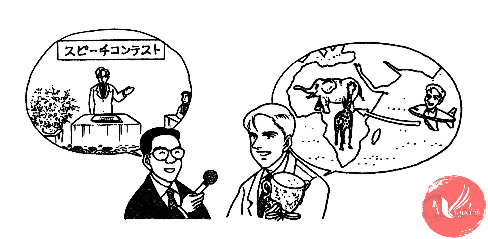

| 司会者： |
優勝 おめでとう ございます。 |
|
すばらしい スピーチでした。 |
|
| ミラー： |
ありがとう ございます。 |
| 司会者： |
緊張なさいましたか。 |
| ミラー： |
はい、とても 緊張いたしました。 |
| 司会者： |
練習は 大変でしたか。 |
| ミラー： |
ええ。忙しくて、なかなか 練習の 時間が ありませんでした。 |
| 司会者： |
賞金は 何に お使いに なりますか。 |
| ミラー： |
そうですね。わたしは 動物が 好きで、子どもの ときから アフリカへ 行くのが 夢でした。 |
| 司会者： |
じゃ、アフリカへ 行かれますか。 |
| ミラー： |
はい。アフリカの 自然の 中で きりんや 象を 見たいと 思います。 |
| 司会者： |
子どもの ころの 夢が かなうんですね。 |
| ミラー： |
はい。うれしいです。 応援して くださった 皆様に 心から 感謝いたします。 どうも ありがとうございました。 |